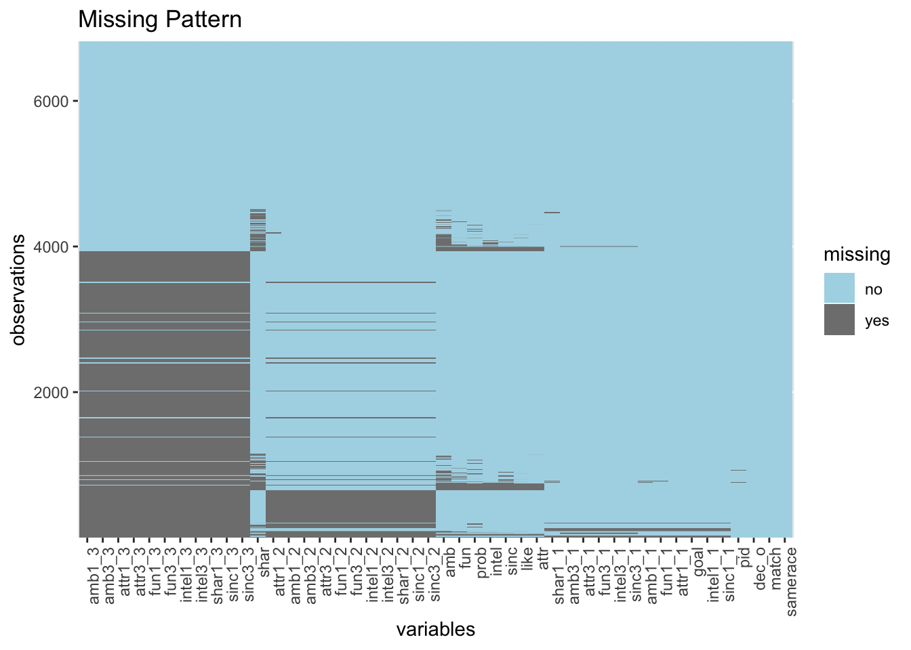

Chapter 4 Missing values

The columns with the most missing data is the questions about the six attribute in expectation (attr:shar) and five attributes in self-evaluation (attr:sinc) answered two weeks after the dating and they have the same missing patterns because they were asked at the same time. Due to the large number of missing in these columns, we dropped questions asked two weeks after the datings in most of our analysis (only included them once to see the change over time). There are 13 more missing patterns in rows, each of which missed only a small part of data, when analyzing these varibles, we would simply filter out the missing data.